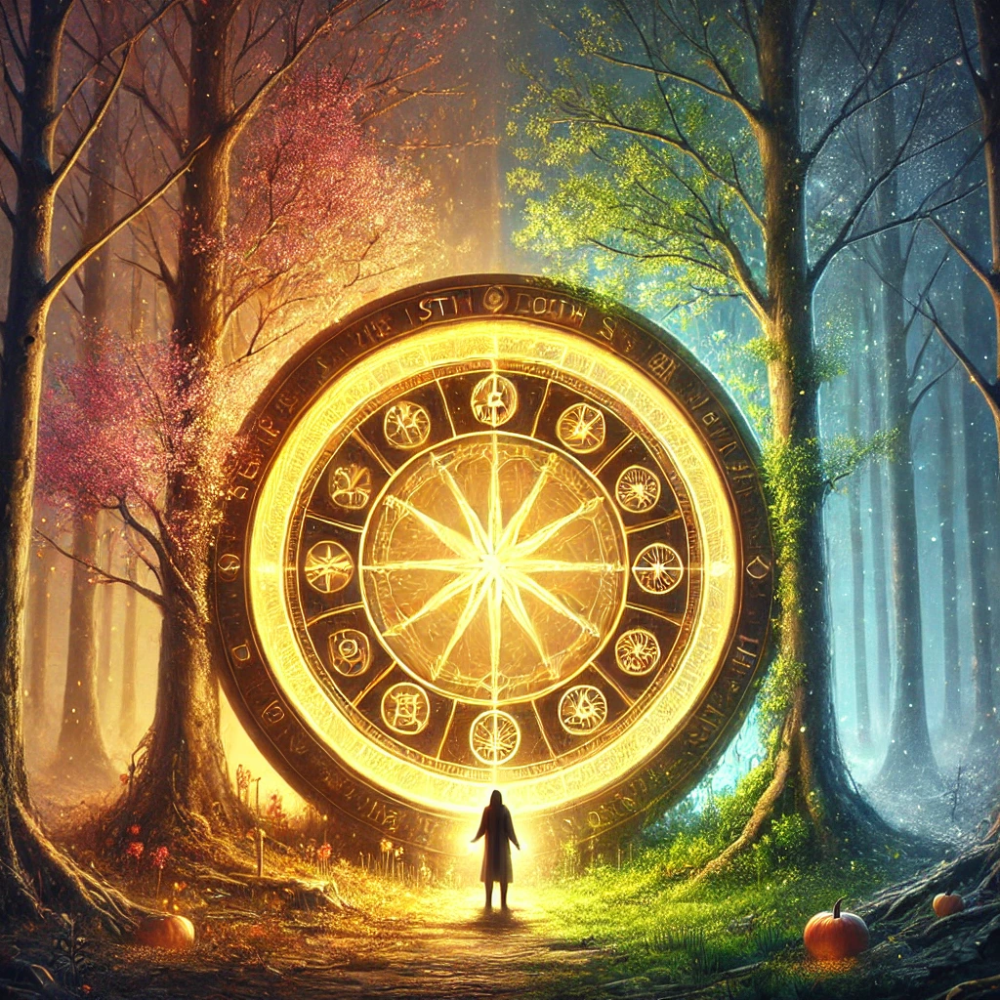

The compass vibrates softly in your hand, its needle spinning slowly as though reflecting the passage of time. The forest around you shifts, and you see the seasons change in rapid succession—buds blooming, leaves falling, and snow covering the ground before the cycle begins anew.
In the center of this transformation stands a great wheel, glowing with symbols of birth, growth, death, and rebirth. You feel drawn to it, sensing its connection to the patterns of your own life. A voice, calm and eternal, echoes through the clearing:
“All things move in cycles. To understand the cycles is to understand your place within them. Every ending is a beginning, and every path turns back on itself.”
The compass glows brighter, attuned to the energy of the wheel. As you approach, choices begin to form, each one tied to the lessons of the cycles.

What will you focus on?